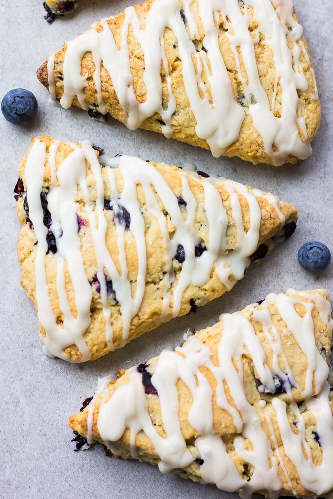

Vegan Blueberry Scones

Light and flavourful, these scones are delicious on their own or served warm with vegan margarine. Sure to be a brunch hit!
This recipe and photo are property of Nora Cooks and have been republished here for educational purposes only. Be sure to check out her website for more great recipes!
Ingredients
- 2 cups all purpose flour
- 1 tablespoon baking powder
- 1 tablespoon ground flaxseeds
- 1/2 teaspoon salt
- 1/2 cup granulated sugar
- 8 tablespoons cold vegan butter
- 1/2 cup almond milk + more as needed
- 1 teaspoon pure vanilla extract
- 3/4-1 cup fresh blueberries (may use frozen as well)
- OPTIONAL: lemon zest from 1 lemon
Optional Glaze
- 1 cup powdered sugar
- 2 tablespoons almond milk
- 1/2 teaspoon pure vanilla extract
Directions
- Preheat the oven to 400 degrees F and line a large baking sheet with parchment paper.
- In a large bowl, whisk together the flour, baking powder, ground flaxseeds, salt and sugar.
- Add the cold vegan butter, and use a pastry cutter or your hands to work the butter into the dry ingredients. It should resemble coarse crumbs.
- Pour in the milk and vanilla, and stir until just combined. If the dough seems too dry and crumbly, add up to another 1/4 cup of milk. Fold in the blueberries.
- On a lightly floured surface, knead the dough a few times until it comes together. Flatten the dough with your hands (lightly flour your hands if sticky). Flatten it into a circle, about 1 inch thick.
- Using a pizza cutter or large knife, cut it like you would a pizza, into 8 pieces.
Place the scones onto the prepared baking sheet and bake for 22-26 minutes, until lightly golden brown on top.
- Make the optional glaze:
- Combine the powdered sugar, milk and vanilla in a small bowl and whisk until smooth. If the glaze is too thick, add more milk. If too thin, add more powdered sugar.
- Let the scones cool for at least 15 minutes, then drizzle some of the glaze onto each scone. Let the glaze set before serving.